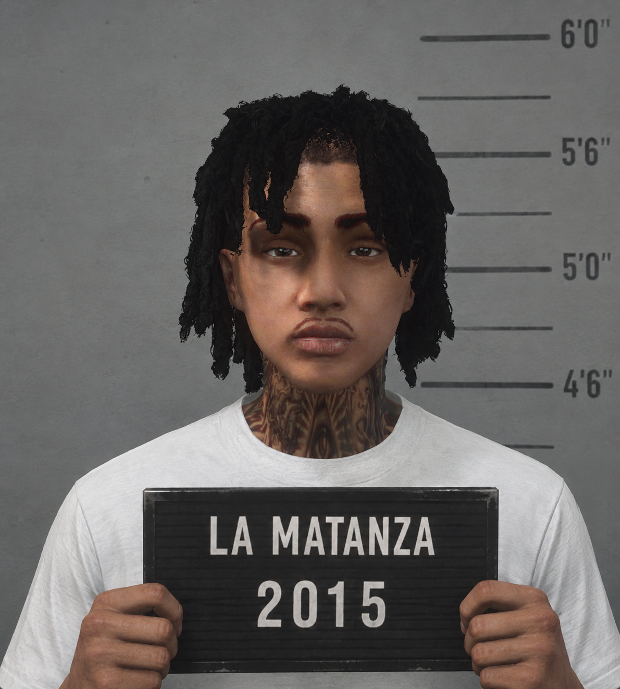
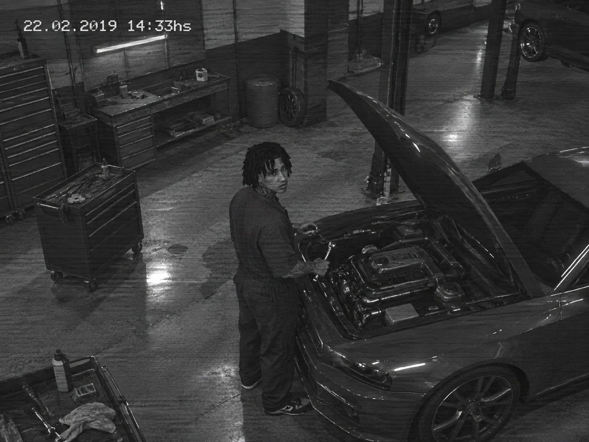
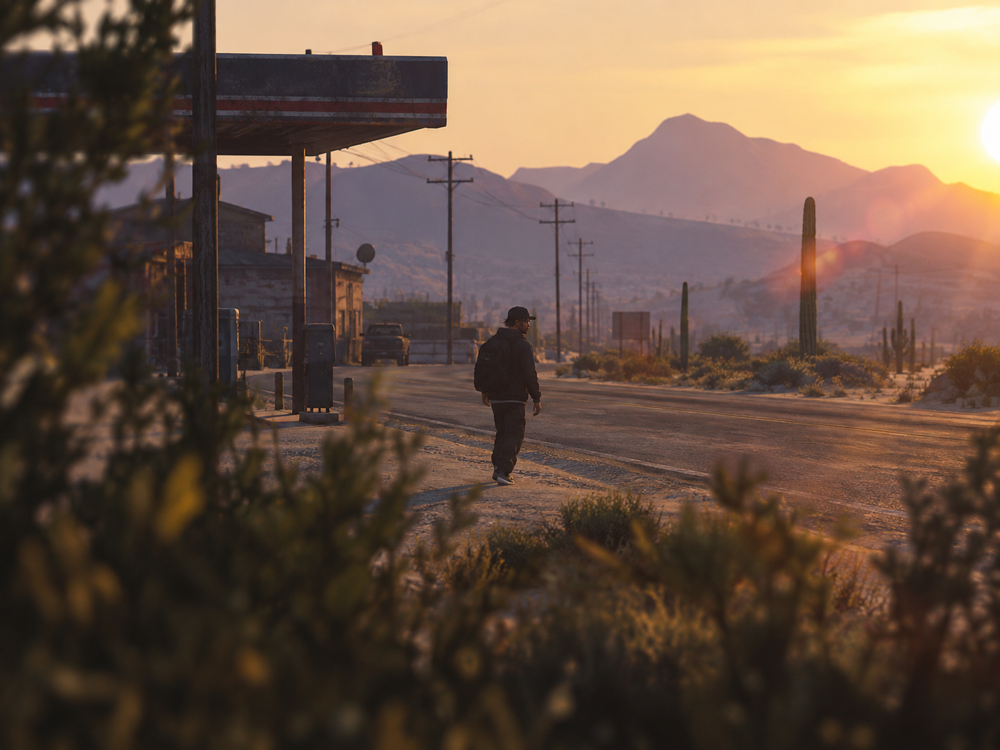
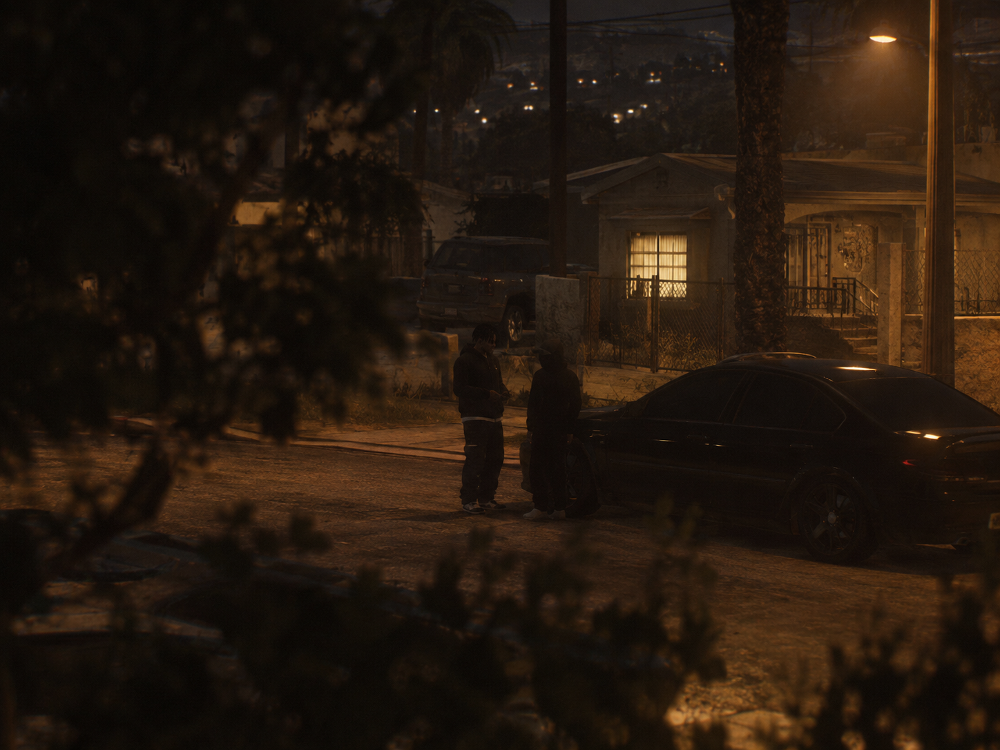
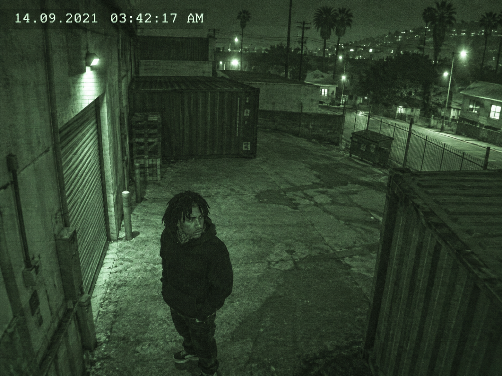
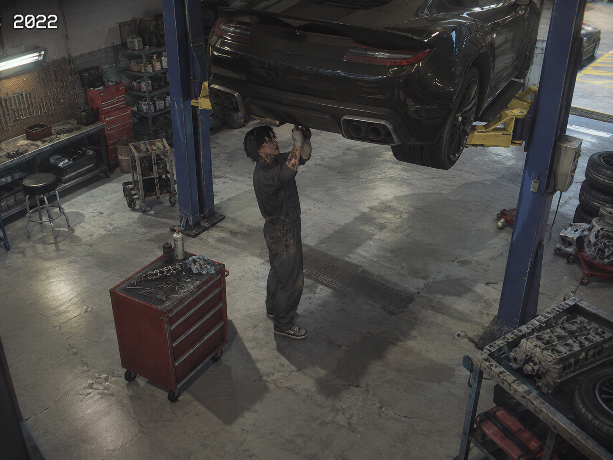
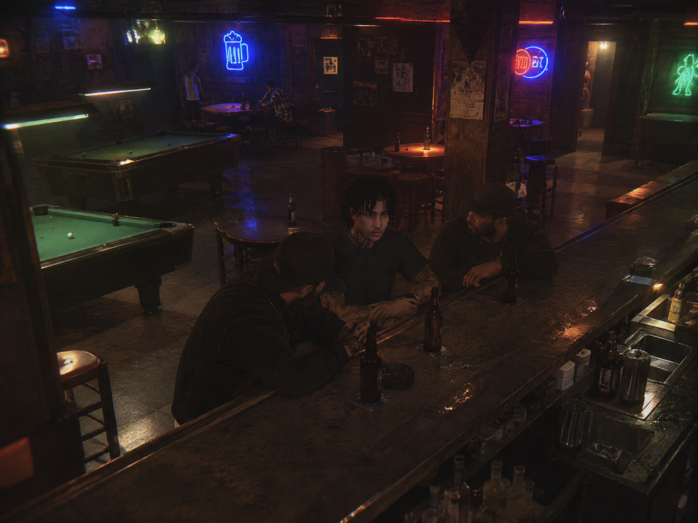

Octavio Damián Magnus, alias "Damián Olivera" en Los Santos, es un conductor de escape y operador logístico de 24 años que huyó de Argentina tras ser traicionado por su socio durante el Operativo Llave Maestra (septiembre 2021). Con antecedentes por robo agravado y asociación ilícita, ingresó a Estados Unidos con identidad falsa uruguaya y se estableció como mecánico en Harmony mientras reconstruye su red en el bajo mundo. Perfil capaz de violencia cuando es necesario pero prefiere evitarla — su especialidad es la conducción evasiva y la logística, no el combate directo. Busca roleplay de acción, persecuciones, tiroteos defensivos, y construcción de red criminal. Es un personaje que puede meterse en tiroteos pero siempre como último recurso o para proteger a los suyos. Su pasado lo alcanza mediante Difusión Roja de INTERPOL, pero opera bajo protección de identidad falsa. Material para entrevistas IC: transcripciones de escuchas, perfil criminológico del FBI, y protocolo de identificación que evita CK instantáneo.
Octavio Damián Magnus — Los Santos Police Department / Interpol

| Sujeto | MAGNUS, Octavio Damián |
| Alias activo en LS | "DAMIÁN OLIVERA" — Identidad prestada (pasaporte falso provisto por M. Acosta) |
| Estado | Prófugo Identidad falsa activa |
| Contexto | Captura obtenida durante seguimiento previo al Operativo Llave Maestra. Sujeto identificado en punto de encuentro del partido de Quilmes, minutos antes de la intervención policial. El sujeto logró evadir el cerco. |
| Nota | El sujeto ingresó a EE.UU. bajo identidad falsa. LSPD NO tiene registro activo de "Magnus" en sus sistemas. Solo Interpol y FBI conocen su verdadera identidad. Cualquier agente de campo que lo identifique debe reportar — NO intervenir sin autorización. |



Todas las imágenes corresponden al mismo sujeto. Variaciones de ángulo y resolución debidas a condiciones de vigilancia y equipamiento utilizado en cada operativo.



MUG-01: Fotografía de archivo policial argentino. LS-01 y LS-02: Capturas de vigilancia en territorio estadounidense bajo identidad falsa "Damián Olivera".
| Nombre completo | Octavio Damián Magnus |
| Apodos | "El Tavi", "Magnus", "El Flaco" (despectivo, usado por rivales) |
| Fecha de nacimiento | 22 de mayo de 1998 |
| Lugar de nacimiento | Partido de La Matanza, Gran Buenos Aires, Argentina |
| Nacionalidad | Argentino |
| Estado civil | Soltero |
| Residencia anterior | Barrio Villa Celanova, La Matanza, Buenos Aires |
| Residencia actual | Los Santos, Estado de San Andreas, EE. UU. |
| Ocupación declarada | Mecánico automotriz (fachada) / Operador logístico en el mercado negro (actividad real) |
| Edad aparente | 24 años |
| Estatura | 1.78 m |
| Peso | 78 kg |
| Complexión | Atlética — hombros anchos, cintura definida. No es voluminoso pero se nota que entrena. |
| Tez | Trigueña / morena clara |
| Cabello | Negro, dreadlocks (rastas) gruesas que caen alrededor del rostro y los hombros. Algunas mechones caen sobre la frente, dándole un aspecto callejero y descuidado a propósito. |
| Ojos | Marrón oscuro, mirada penetrante pero serena. Expresión neutral, casi impasible — como si evaluara a todo el mundo sin mover un músculo. |
| Rasgos faciales | Pómulos marcados, mandíbula fuerte y definida, labios llenos. Afeitado limpio o con sombra muy leve de barba. Nariz recta. Una cicatriz fina de 3 cm en la ceja izquierda (caída de moto a los 16). |
| Tatuajes | Cuello: Patrones tribales intrincados en tinta rojiza-marrón que cubren ambos lados del cuello, extendiéndose hasta la mandíbula y bajando hacia las clavículas. Brazo izquierdo: reloj de arena sin agujas en el antebrazo (simboliza que "el tiempo no espera"). Pecho: virgen de Luján pequeña sobre el corazón (protección). Nuca: letras "O.M." en tipografía gótica discreta (ocultas bajo las rastas). |
| Manos | Callosas, uñas siempre cortas. Manchas de grasa de motor que nunca terminan de irse. |
Estilo general: Urbano funcional. No llama la atención pero tampoco pasa desapercibido. Ropa de marcas accesibles, siempre limpia y cuidada.
| Interior | Remmera blanca o negra, siempre lisa, metida por dentro. |
| Capa exterior | Camisa de franela a cuadros (azul marino/gris) o buzo con capucha negro. En invierno, campera de cuero negra tipo biker, gastada en los codos. |
| Pantalones | Jeans oscuros rectos, sin roturas. A veces joggers negros cuando está en el taller. |
| Calzado | Zapatillas Nike Air Max negras o botas de trabajo tipo Timberland. Siempre limpias. |
| Accesorios | Cadena de plata fina con medalla de San Cayetano (patrón del trabajo). Reloj Casio digital en muñeca derecha. Guantes de mecánico sin dedos cuando trabaja. |
| Modo "trabajo" | Guantes negros de cuero fino, gorra oscura calada, mochila negra con herramientas. Nunca joyería ostentosa. |
Rasgo dominante: Templanza. Octavio no grita, no amenaza, no se intimida. Habla bajo, mira a los ojos, y cuando algo no le cierra, se queda en silencio hasta que la otra persona rellena los huecos. Esa quietud genera más respeto que cualquier grito.
Lealtad antes que todo. Para Octavio, la palabra dada vale más que un contrato. Si le dice a alguien "estoy con vos", se juega entero. Pero esa misma lealtad lo vuelve vulnerable: confía difícil, y una vez que confía, le cuesta ver las señales de traición hasta que es tarde.
Odio visceral a la traición. No perdona y no olvida. No busca venganza impulsiva — la espera. El que lo traiciona sabe que lo sabe, y eso alcanza.
No lastima a quien no debe. No roba a familias trabajadoras, no se mete con quien ya está en el suelo. Su código es claro: si vas a hacer daño, que sea por negocios, nunca por placer.
Desconfianza estructural. Cree que todo el mundo tiene un precio. No es cínico por maldad, sino por experiencia. En su barrio, vio cómo la necesidad convertía a los mejores en soplones.
Humor seco. Sarcástico, irónico. Usa el humor como escudo y como arma. Nunca se ríe fuerte; siempre es una media sonrisa que te deja dudando si fue en serio.
Lo que lo define por dentro: Octavio carga con una culpa silenciosa. En Argentina dejó gente atrás — una madre que cree que está trabajando en España, un hermano menor que lo idolatraba, y un socio que terminó en el hospital por una decisión que él tomó en una fracción de segundo. No habla de eso. Pero cada vez que duerme mal (que es casi siempre), es por eso.
No busca ser el jefe. No le interesa el poder por el poder. Lo que quiere es control: controlar su entorno, controlar los riesgos, controlar cuándo entra y cuándo sale. El problema es que en este mundo, el control es una ilusión, y Octavio lo sabe mejor que nadie.
Capacidad sobrenatural para leer el tránsito en tiempo real. Sabe por dónde cortar, cuándo frenar, cuándo acelerar. Aprendió en las calles sin asfaltar de La Matanza y perfeccionó huyendo.
No se congela, no se acelera. En una situación de crisis, su pulso baja en vez de subir. Prefiere que le griten "¡manejá!" a que le griten "¡corré!".
Sabe cuándo alguien miente. No por ciencia, sino por supervivencia. En su entorno, equivocarte de persona te costaba la libertad o la vida.
Conoce los autos por dentro y por fuera. Puede identificar un modelo de memoria por el sonido del motor, cambiar una cerradura en segundos, y modificar un vehículo para que no aparezca en ningún sistema.
Piensa tres pasos adelante. Antes de un operativo, ya tiene pensadas tres rutas de escape, dos puntos de reunión alternativos y un contacto al que llamar si todo sale mal.
No habla de más. No publica, no presume, no deja rastro digital. En un mundo donde todos quieren ser vistos, Octavio sabe que el que sobrevive es el que nadie ve venir.
No es un miedo abstracto — es una obsesión funcional. Siempre revisa si lo siguen, cambia de ruta sin avisar, y duerme con la mochila lista.
Su mayor vulnerabilidad. Le cuesta delegar porque necesita controlar. Cuando alguien nuevo entra en su círculo, lo pone a prueba constantemente.
No tiene amigos de verdad — tiene socios, contactos y conocidos. La última persona a la que llamó "amigo" lo entregó a la policía.
La culpa por lo que dejó en Argentina no lo deja dormir. A veces toma decisiones irracionales para "equilibrar la balanza", como ayudar a alguien que no debería.
Octavio Damián Magnus nació el 22 de mayo de 1998 en el Hospital Posadas, en el partido de La Matanza, Gran Buenos Aires. Creció en Villa Celanova, un barrio donde las veredas se terminaban antes que las ganas de los pibes de jugar a la pelota en la calle.
Su padre, Rubén Magnus, era mecánico de un taller familiar en la Avenida San Martín. Un hombre de pocas palabras, manos enormes y espalda encorvada de tanto estar debajo de autos ajenos. Su madre, Silvia "Chiqui" Fernández, trabajaba de mañana en una escuela como auxiliar y de tarde limpiaba oficinas en el centro. Dos trabajos, dos sueldos que nunca alcanzaban.
Octavio era el mayor de dos hermanos. Su hermano menor, Facundo (tres años menor), era lo contrario: rubio, inquieto, sociable. Octavio era el callado, el que observaba, el que se quedaba mirando el motor desarmado del Torino del vecino mientras los otros pibes jugaban en la plaza.
El contexto: La Matanza a fines de los noventa y principios de los dos mil no era un lugar para soñadores. Era un lugar para los que aprendían rápido. La escuela pública funcionaba a medias, la comisaría del barrio estaba más ocupada archivando causas que resolviéndolas, y el trabajo formal era algo que los padres deseaban para sus hijos pero que pocos lograban.
Primeros contactos con la calle: A los 11 años, Octavio ya sabía desarmar y armar una cerradura de auto con alambre. No lo aprendió de nadie — lo aprendió mirando. Su padre, sin saberlo, le había transmitido el oficio. A los 13, un vecino del fondo, Walter "El Wachi" Pereyra, le ofreció sus primeros "encargos": llevar mensajes, vigilar esquinas, avisar si venía la yuta. Pagaban poco, pero pagaban. Y Octavio necesitaba plata — no para él, sino para ayudar en casa cuando su viejo se quedaba sin trabajo, que pasaba seguido.
La primera vez que lo paró la policía: Tenía 14 años. Iba en bici con una mochila que no era suya. Lo pararon, le pidieron DNI, le preguntaron de dónde venía. Contestó tranquilo. Lo dejaron ir. Pero algo cambió ese día: se dio cuenta de que la policía no lo detenía por lo que hacía, sino por lo que parecía. Y aprendió a parecer lo correcto.
A los 15 años, Octavio ya manejaba. No tenía licencia, obviamente, pero en el Gran Buenos Aires de esa época, un pibe con un auto viejo en la calle no era raro — era parte del paisaje. Su primer auto fue un Chevrolet Corsa 97, gris, con el escape roto y el asiento del conductor sujeto con alambre. Se lo dejó usar el dueño del taller donde su viejo trabajaba, a cambio de que Octavio le ayudara los sábados.
El aprendizaje real: No fue un mentor quien le enseñó a conducir. Fue la necesidad. A los 16, ya hacía "encargos" más serios: trasladar vehículos robados de un garage a otro, llevar paquetes de un punto A a un punto B sin preguntar qué había adentro, y servir de "campana" en operativos chicos — robos a casas de familia en barrios cerrados de Pilar y Nordelta.
Su especialidad, sin proponérselo, fue naciendo ahí: la conducción. Mientras otros se ponían nerviosos al volante, Octavio sentía que el auto era una extensión de su cuerpo. Podía leer el tránsito como un ajedrecista lee el tablero. Sabía dónde estaban los patrulleros antes de verlos. Sabía qué calle tenía lomos de burro y cuál no. Sabía cuándo un semático en amarillo significaba "pasar" y cuándo significaba "frenar y esperar".
El primer arresto: A los 17 años. Lo agarraron con un auto que había sido reportado como robado tres horas antes. Dijo que se lo había prestado un amigo. No dio nombre. Pasó 72 horas detenido. Salió porque el dueño del auto no hizo la denuncia formal — era un auto robado a su vez de una aseguradora. Lección aprendida: nunca manejar algo sin saber de dónde viene.
La relación con su padre: Rubén sabía, en algún nivel, lo que hacía su hijo mayor. Nunca lo dijo. Nunca lo preguntó. Pero un día, cuando Octavio tenía 18, le dijo una sola frase mientras arreglaban un motor juntos: "Hacé lo que quieras, pero no te equivoques de calle. Hay calles que no tienen vuelta." Octavio no olvidó jamás esas palabras.
Entre los 19 y los 23 años, Octavio se integró en una organización dedicada al robo de vehículos de alta gama por encargo y su posterior reventa en el mercado paralelo. No era una banda callejera — era una operación con estructura: tenía mecánicos, tenía contactos en concesionarias, tenía gente que conseguía documentación adulterada, y tenía "clientes" en Uruguay y Paraguay.
El rol de Octavio: Era el conductor de extracción — el que sacaba el auto del punto de robo y lo llevaba al garage seguro. También era el encargado de logística de traslados: mover vehículos entre provincias, coordinar horarios, elegir rutas alternativas. No era el líder, pero era indispensable. Y eso, en ese mundo, es casi lo mismo.
| Walter "El Wachi" Pereyra | El que lo metió. Contactos, negociaciones, la cara visible. Carismático, impulsivo, inteligente pero impaciente. |
| Lucas "Luqui" Benítez | Mecánico. El que preparaba los autos para la reventa. Tranquilo, metódico, el único al que Octavio consideraba amigo de verdad. |
| Diego "El Diego" Sosa | El conductor de los operativos más grandes. Experimentado, temerario, con una reputación que le abría puertas y le generaba enemigos por igual. |
| Martín "El Colo" Acosta | El que conseguía la documentación. Abogado caído, cerebro brillante, alcohólico funcional. Era el estratega del grupo. |
El ascenso: Durante esos cuatro años, Octavio pasó de ser un pibe que llevaba mensajes a ser el operador logístico de una red que movía entre 40 y 60 vehículos por mes. No era rico — la plata se repartía entre muchos — pero vivía mejor que su viejo, pagaba las cuentas de la casa, y le compró a su mamá una cocina nueva. Eso le alcanzaba.
El error: Empezó a creer que era invisible.
Lugar: Garage clandestino en el partido de Quilmes, zona sur del Gran Buenos Aires.
La operación era routine: recibir tres vehículos — un BMW X5, una Toyota Hilux y un Mercedes-Benz Clase C — trasladarlos a un depósito en La Plata, y desde ahí enviarlos a Montevideo por vía fluvial. El plan estaba cerrado. Los horarios estaban coordinados. Las rutas estaban verificadas.
Pero algo no cerraba.
Octavio esperaba en el garage con la Hilux ya cargada en el remolque. Recibió un mensaje de El Wachi: "Todo bien, llego en 10." Diez minutos después, no llegó El Wachi. Llegó la Policía Federal.
No fue una redada al azar. Fue un operativo montado con inteligencia: vehículos tapados en las esquinas, drones térmicos, y un equipo de asalto que entró por dos puntos simultáneos. Alguien había soplado. Y no era un soplón cualquiera — era alguien que conocía los horarios, los puntos de encuentro y las rutas.
Octavio escuchó el primer estruendo — la puerta del garage cediendo. No pensó. Acto reflejo. Subió a la Hilux, puso primera, y salió por la puerta trasera del depósito, atravesando una pared de chapa que daba a una calle sin salida. El BMW y el Mercedes quedaron atrás. El Wachi no apareció jamás. Luqui fue detenido en el lugar. El Diego logró escapar pero fue recapturado tres días después.
Octavio manejó durante cuarenta minutos sin detenerse. Cambió de auto dos veces — dejó la Hilux en un descampado y robó un Fiat Palio que tenía las llaves puestas en una vereda de Lanús. Desde ahí fue a la casa de su madre, entró por la ventana, agarró una mochila con algo de ropa, tres mil pesos en efectivo, y su DNI.
Desde un teléfono público de una estación de servicio en Ruta 2, llamó a su madre. Le dijo que se iba. Que no era por ella. Que la iba a llamar cuando pudiera. Ella no preguntó. Solo lloró.
Cruzó a Uruguay por el puente de Colonia en un micro de línea, con el DNI en la mano y la mochila al hombro. De ahí, un vuelo a São Paulo con pasaporte falso conseguido por El Colo antes de que también cayera. De São Paulo, otro vuelo — esta vez con destino a Los Santos, Estados Unidos, bajo una identidad prestada que El Colo tenía guardada como seguro de vida.
Su madre, que recibió una llamada anónima tres semanas después diciéndole que su hijo estaba "a salvo en el extranjero". Su hermano Facundo, que tenía 20 años y acababa de entrar a la universidad. Luqui, que fue condenado a seis años por asociación ilícita y robo agravado. Una causa judicial abierta: Expediente N° 4.217/2021. Una orden de captura internacional emitida por Interpol a solicitud de la Fiscalía Federal de Quilmes.
Llegada: Octavio llegó a Los Santos en noviembre de 2021, con 23 años, sin contactos, sin dinero real, y con la certeza de que si lo identificaban, lo extraditaban. Pero no llegó como Octavio Magnus. Llegó como "Damián Olivera" — la identidad del pasaporte falso que El Colo tenía guardada como seguro de vida. Un uruguayo nacido en Salto, con documentos limpios, sin antecedentes en ningún sistema estadounidense. Esa fue su primera línea de defensa.
La identidad falsa: "Damián Olivera" existe en papel — pasaporte, un historial crediticio mínimo construido a propósito, y un número de seguro social que El Colo compró a un contacto en Miami. Octavio sabe que si la policía lo para y le pide documentos, "Damián" no levanta alertas. Pero también sabe que si lo investigan en profundidad, si cruzan datos con Interpol o si alguien lo reconoce, la fachada se cae. Por eso vive con la mochila lista. Por eso no se queda nunca más de dos noches seguidas en el mismo lugar sin tener una ruta de escape pensada.
Los primeros meses: Fueron los más duros. Vivió en un monoambiente en Strawberry, trabajó de lavacoches en un taller de Vespucci Beach, y durmió con la luz encendida durante las primeras tres semanas. No hablaba con nadie más de lo necesario. No se hizo amigos. No salió de noche. Observaba. Todo bajo el nombre de Damián.
La adaptación: Poco a poco, Octavio entendió que Los Santos era diferente. La ciudad era más grande, más cara, más violenta — pero también más anónima. Nadie lo conocía. Nadie sabía su nombre real. Y eso, para alguien que había huido de su propio país, era un lujo.
El reinicio: Consiguió trabajo como mecánico en un taller de Harmony, cerca de la frontera con Blaine County. El dueño, un hombre llamado Gerald, no hizo preguntas cuando Octavio le mostró sus manos callosas y le dijo que sabía de motores. Empezó a ganar lo suficiente para mudarse a un lugar mejor, comprarse ropa decente, y empezar a ahorrar.
Los contactos: Pero Octavio no vino a Los Santos a ser mecánico. Eso era el plan de supervivencia. El plan real era otro: encontrar su lugar en la cadena. Empezó a frecuentar los mismos bares, a conocer a la misma gente, a escuchar las mismas conversaciones. Y cuando alguien necesitó a un conductor para un "trabajo" — un robo a una casa de empeños en East Los Santos — Octavio dijo que sí. Sin preguntar cuánto. Sin preguntar por qué. Solo dijo: "Yo manejo."
Octavio está en Los Santos desde hace aproximadamente dos años. Vive bajo el nombre de "Damián Olivera". Tiene un departamento pequeño en Pillbox Hill. Trabaja de mecánico de día. De noche, hace "encargos" — traslados de vehículos, logística de operativos, conducción de escape. Está construyendo su red. No tiene grupo fijo todavía. No tiene jefe. Y no tiene intención de tener uno — al menos no por ahora. Nadie en su círculo conoce su nombre real. Para todos, es Damián.
| Corto plazo | Establecer una base operativa sólida. Conseguir un taller propio o asociarse con alguien de confianza. Hacer contactos que no lo traicionen. |
| Mediano plazo | Montar una operación de reventa de vehículos robados a mediana escala, usando Los Santos como centro de distribución hacia el norte del estado. |
| Largo plazo | Tener suficiente dinero y suficientes contactos como para que, si algún día la cosa se complica de nuevo, pueda desaparecer sin dejar rastro — esta vez, para siempre. |
Lo que no sabe: Que la Interpol no se olvida. Que su expediente sigue abierto. Y que en algún lugar de Los Santos, puede haber alguien que lo conozca — o que crea conocerlo.
| DATOS DEL SUJETO | |
|---|---|
| Nombre | MAGNUS, Octavio Damián |
| Alias conocidos | "El Tavi", "Magnus", "El Flaco", "O.M." |
| Fecha de nacimiento | 22/05/1998 |
| Lugar de nacimiento | La Matanza, Buenos Aires, Argentina |
| Nacionalidad | Argentina |
| Sexo | Masculino |
| Estatura / Peso | 1.78 m / 78 kg |
| Complexión | Atlética |
| Cabello / Ojos | Negro, corte fade / Marrón oscuro |
| Señas particulares | Cicatriz de 3 cm en ceja izquierda. Tatuaje de reloj de arena en antebrazo izquierdo. Tatuaje de Virgen de Luján en pecho. Iniciales "O.M." en nuca. |
| Última residencia conocida | Harmony, Los Santos, San Andreas, EE. UU. |
| Ocupación declarada | Mecánico automotriz |
| N° | Fecha | Juzgado / Fiscalía | Cargo | Resolución |
|---|---|---|---|---|
| 1 | 03/06/2015 | Juzgado Correccional N° 4, Depto. Judicial La Matanza | Encubrimiento (art. 277 CP) — Posesión de vehículo de procedencia ilícita | Condicional Libertad asistida por 18 meses. No reincidió durante el período. |
| 2 | 17/11/2016 | Juzgado de Garantías N° 3, Depto. Judicial La Matanza | Resistencia a la autoridad (art. 239 CP) — Fuga durante control vehicular | Multa y libertad condicional Se le retuvo la licencia de conducir (no poseía). Causa cerrada por pago. |
| 3 | 22/02/2019 | Fiscalía Federal de Quilmes, Buenos Aires | Robo simple en grado de tentativa (art. 164 y 42 CP) — Intento de sustracción de vehículo en vía pública | Sobreseimiento parcial No se pudo acreditar autoría material. Causa archivada. |
| 4 | 14/09/2021 | Fiscalía Federal de Quilmes, Buenos Aires | Robo agravado por la noche (art. 164 inc. 2 CP), Asociación ilícita (art. 210 bis CP), Resistencia a la autoridad (art. 239 CP) — Operativo "Llave Maestra" | Prófugo Orden de captura nacional e internacional. Causa en estado de instrucción. |
Captura de cámara de seguridad en blanco y negro. Sujeto identificado trabajando en garage clandestino del partido de Avellaneda con herramienta en mano. Mirada directa a cámara — posible consciencia de vigilancia. Resolución media, timestamp legible.
Huellas tomadas durante arresto del 03/06/2015 (causa N° 1). Registradas en sistema AFIS argentino. NO registradas en IAFIS (EE.UU.) — sujeto no fue procesado federalmente en territorio estadounidense.
Fotografía teleobjetivo capturada durante seguimiento post-Operativo Llave Maestra. Sujeto avistado caminando hacia estación de servicio en Ruta 2 con mochila. Posible punto de contacto telefónico previo a cruce fronterizo. Amanecer del 14/09/2021.
Fotografía nocturna de vigilancia. Sujeto reunido con contacto no identificado junto a vehículo negro en calle residencial de Quilmes. Noche del 13/09/2021 — víspera del operativo. Posible coordinación final de logística.
Registro dactilar: Huellas dactilares tomadas el 03/06/2015 durante arresto en La Matanza. Registradas en sistema AFIS (Argentina). NO disponibles en IAFIS (EE.UU.) — no hubo proceso federal estadounidense.
Patrones dactilares: Pulgar: Loop ulnar. Índice: Whorl espiral con dos deltas. Medio: Arch tented (arco en tienda de campaña).
Señas dactilares particulares: El pulgar derecho presenta una cicatriz de 2 cm (corte con herramienta de taller mecánico, circa 2017). El índice derecho muestra callosidad pronunciada en zona lateral (uso prolongado de llaves de torque). El dedo medio presenta callosidad en base por trabajo con destornilladores y herramientas de mecánica automotriz.
Nota operativa: Para identificación en territorio estadounidense se requiere comparación manual con registros argentinos vía canal INTERPOL. Sistema LSPD NO tiene match automático. Esto significa que un control rutinario de tráfico NO generará alerta si el sujeto presenta documentación de "Damián Olivera".
Identificación positiva solo mediante: (1) Investigación profunda con cruce internacional, (2) Reconocimiento visual por informante o agente con conocimiento del caso, (3) Error del sujeto que exponga su verdadera identidad.
| Nombre/Alias | Relación | Estado | Notas |
|---|---|---|---|
| Gerald Whitman | Empleador (taller mecánico) | Sin antecedentes | Dueño del taller en Harmony. Posible cómplice sin saberlo o encubridor. Se recomienda entrevista. |
| "Flaco" Mendoza | Contacto informal | Antecedentes menores | Visto en múltiples ocasiones en "El Rincón". Conocido por tráfico de menor cuantía. Posible enlace. |
| Victor "Vicky" Ramos | Asociado operativo | Prófugo | Sujeto de interés en investigación paralela. Visto junto a "Olivera" en Garage Vespucci el 15/03/2023. |
| María Elena Torres | Vecina / posible contacto | Sin antecedentes | Vive en el mismo edificio en Pillbox Hill. Relación bajo investigación. |
| [NO IDENTIFICADO] | Contacto principal | Desconocido | Sujeto masculino, tez clara, 45-50 años. Visto reuniéndose con "Olivera" en ubicación no revelada. Posible jefe de operación local. |
| Vehículo | Patente/ID | Estado | Notas |
|---|---|---|---|
| Chevrolet Van | LS-4821-KM | Registrado a nombre falso | Vehículo de "trabajo" del taller. Usado para traslados legítimos y posiblemente ilícitos. |
| Toyota Supra (modificado) | [SIN PATENTE] | Robado / Modificado | Visto en Garage Vespucci. Motor modificado, sin identificadores. Altamente probable que sea vehículo de escape para operativos. |
| Sedan genérico (gris) | LS-7734-QR | Patente clonada | Patente reportada como clonada. Vehículo original localizado en otro estado. Posible "auto fantasma" para operativos. |
| Moto deportiva (negra) | [SIN PATENTE] | No registrado | Visto circulando sin patente en zona de Pillbox Hill. Posible vehículo de fuga rápida. |
Trabaja en el taller de 08:00 a 18:00. Actividad sospechosa registrada entre 22:00 y 04:00. Patrón consistente de 5 días laborales + actividad nocturna fines de semana.
Usa rutas alternativas para evitar cámaras. Cambia de vehículo cada 2-3 operativos. Prefiere calles sin salida para reuniones (posibles puntos de escape pre-planificados).
Usa teléfonos desechables (burner phones). Cambia número cada 7-10 días. No usa redes sociales. Comunicaciones cifradas sospechadas pero no interceptadas.
Ingresos declarados inconsistentes con estilo de vida. Alquiler pagado en efectivo. No usa tarjetas de crédito. Posible lavado a través del taller mecánico.
Sujeto introvertido, hipervigilante, con tendencia al aislamiento social. Muestra alta capacidad de planificación pero baja tolerancia a la improvisación. Posible TEPT no diagnosticado (historia de fuga traumática). Lealtad extrema a pocos contactos verificados.
¿Por qué LSPD no lo arresta de inmediato?
| Identidad activa | El sujeto opera bajo identidad de "Damián Olivera" (uruguayo, pasaporte legítimo en sistemas estadounidenses). Un control rutinario NO genera alerta. |
| Registros dactilares | Sus huellas están en AFIS (Argentina) pero NO en IAFIS (EE.UU.). No hay match automático posible en un control de rutina. |
| Difusión Roja | INTERPOL tiene Difusión Roja activa, pero esta NO es una orden de arresto automático — requiere validación por autoridad federal (FBI). LSPD de campo NO tiene acceso directo a esta información. |
| Protocolo actual | FBI monitorea de forma pasiva. Se prefiere seguimiento para identificar contactos locales antes de intervenir. Cualquier agente de campo que identifique al sujeto debe reportar — NO arrestar sin autorización de la División de Inteligencia. |
| Riesgo de exposición | Si el sujeto comete un delito grave en territorio estadounidense y es procesado, sus huellas serán tomadas y podrían generar match vía cooperación internacional. Esto activa la trama de extradición. |
Nota para el entrevistador OOC: Este protocolo está diseñado para que el personaje pueda existir en el servidor sin ser arrestado automáticamente. La policía puede investigarlo, seguirlo, o intentar descubrir su identidad como parte del roleplay — pero no hay un "CK instantáneo" por tener antecedentes en Argentina. La identidad falsa es su escudo, y que ese escudo se rompa depende de la trama y las decisiones del jugador.
VOZ-2 (El Wachi): Tavi, tengo un cliente nuevo. Quiere tres unidades, todas de alta gama. BMW, Hilux y un Mercedes. Pago por adelantado, la mitad ahora.
VOZ-1 (Magnus): ¿De dónde son?
VOZ-2: Pilar. Barrio cerrado. Ya tengo la info de los horarios, cuándo salen, cuándo no hay nadie. Vos te encargás de sacarlos.
VOZ-1: ¿Y la documentación?
VOZ-2: El Colo ya está en eso. Dice que en dos semanas tiene todo listo. Vos prepará el garage de Quilmes, ahí los vamos a tener antes de moverlos.
VOZ-1: ¿Quilmes? Eso es muy cerca de la Federal, Wachi. Me parece que nos estamos jugando.
VOZ-2: Tranquilo, hermano. Ya tengo arreglado con un tipo de adentro. Si hay problema, nos avisa. Vos manejá, que para eso sos el mejor. El resto lo dejo yo.
VOZ-1: ... Está bien. Pero si algo sale mal, yo no estoy. Me voy y no me encuentran más.
VOZ-2: No va a salir mal. Confía en mí, Tavi. Esto es grande. Vamos a mover sesenta unidades este año si todo sale bien.
VOZ-1: ... Dale. Pero Quilmes no me cierra. Decile al Colo que busque algo más lejos.
VOZ-2: Ya está arreglado. No hay vuelta atrás. Nos vemos el jueves.
VOZ-3 (Luqui): Tavi, ¿estás seguro de esto? El Wachi me dijo que todo estaba listo, pero yo vi unos movimientos raros cerca del garage. Autos que no eran de siempre, gente mirando mucho.
VOZ-1 (Magnus): Yo también lo noté. Hay algo que no cierra. Le dije a Wachi que cambiemos de ubicación, pero me dijo que ya está todo arreglado.
VOZ-3: ¿Y si cancelamos?
VOZ-1: No podemos. Ya se pagó la mitad. Si nos bajamos ahora, nos buscan a nosotros también. El cliente no perdona.
VOZ-3: ... ¿Y si algo sale mal?
VOZ-1: Vos tenés el auto listo para salir rápido. Si veo que hay problema, te aviso y nos vamos. No esperes, no preguntes, manejá. Yo hago lo mismo.
VOZ-3: ... Está bien. Pero Tavi, si nos agarran, yo no digo nada. Vos sabés.
VOZ-1: Yo tampoco. Nunca.
VOZ-1 (Magnus): Wachi, estoy en el garage. Ya cargué la Hilux. ¿Dónde estás?
VOZ-2 (El Wachi): ... Estoy en camino. Diez minutos, Tavi. Diez minutos y llego.
VOZ-1: Algo no está bien. Escuché ruidos afuera. ¿Venis solo?
VOZ-2: Sí, sí. Tranquilo. Ya llego.
VOZ-1: ... Wachi, si nos están tendiendo una trampa, yo me voy. No me voy a quedar esperando.
VOZ-2: No hay trampa, hermano. Confía en mí. Diez minutos.
[Fin de la llamada. A las 03:47 AM, la Policía Federal ingresa al garage. PEREYRA nunca llegó.]
Nivel de peligrosidad: Medio-Alto
| Violencia | Capaz de usar violencia cuando es necesario, especialmente en situaciones defensivas o para proteger a socios. No busca confrontación directa pero tiene entrenamiento básico en manejo de armas y combate callejero. Perfil de "acción defensiva" — prefiere evitar tiroteos pero puede participar en ellos cuando la situación lo requiere. Historial de fuga exitosa bajo presión extrema. |
| Fuga | Alto El sujeto demostró capacidad operativa para evadir un cerco policial montado, cruzar fronteras con documentación falsa y mantener perfil bajo durante más de tres meses sin ser detectado. Se considera altamente probable que intente evadir la detención si se siente comprometido. |
| Red de contactos | Se presume que el sujeto ha establecido vínculos con elementos del crimen organizado local en Los Santos. Se investiga la naturaleza y extensión de dichos vínculos. |
| Recursos | Limitados al momento de su llegada. Se desconoce su situación económica actual. |
| Modus Operandi | Sujeto especializado en conducción evasiva y logística de traslados ilícitos. No opera como ejecutor material de robos — su rol es de soporte operativo de alto valor. Se le atribuye participación en al menos 40 hechos de sustracción de vehículos en el período 2017-2021 en la Provincia de Buenos Aires. |